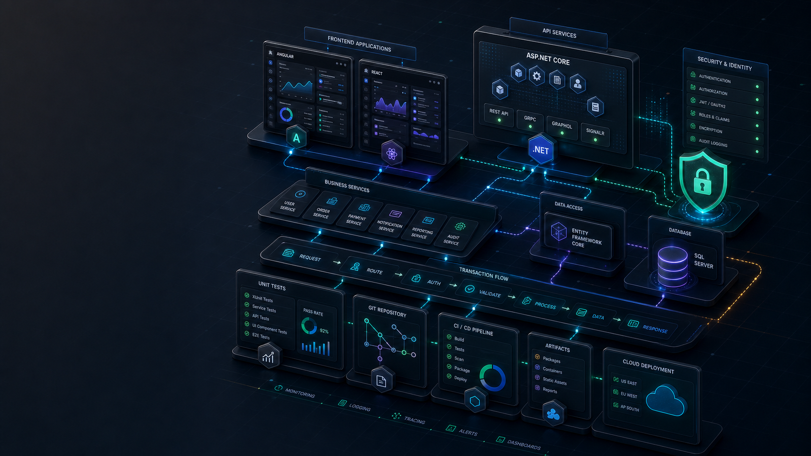

.NET, Angular, React, and full-stack engineering
.NET Core - Angular - React - SQL Server - secure SDLC
Building secure multi-tier applications with fast UI and dependable data paths.
Software Engineer with 8+ years designing, developing, and deploying high-volume distributed transactional applications across .NET, Angular, React, SQL Server, Entity Framework, REST APIs, CI/CD, and unit-tested Agile delivery.
Currently focused on
component-based Angular and React applications

transaction loop
validate -> process -> persist -> test -> release
faster API response times through query and service tuning
uptime across production enterprise systems
release acceleration from CI/CD and automated tests
Engineering approach
Durable applications come from disciplined contracts, careful data access, and repeatable delivery.
I like the practical craft of full-stack development: UI components that are easy to reuse, APIs that make the domain clear, data models that hold up under transactions, and pipelines that make release confidence part of the daily rhythm.
Stack
Full-stack .NET delivery with Angular/React UI depth and SQL discipline.
.NET CoreC#ASP.NETEntity Framework
EF CoreLINQSQL ServerT-SQL
AngularReactReact NativeTypeScript
JavaScriptHTML5CSS3REST APIs
OOPSOLIDRepository PatternStored Procedures
GitCI/CDxUnitNUnitDockerKubernetes
Experience
Production work across component-based UI, .NET services, SQL data access, and release automation.
- Designed and deployed multi-tiered, distributed services with a component-based React/TypeScript front-end and a .NET/Python backend, integrating OpenAI and Greenhouse APIs and boosting candidate-match accuracy by 35%.
- Modeled relational schemas on SQL Server/PostgreSQL with Entity Framework, handling transactions and connection management while optimizing queries via indexing and join tuning, cutting average API response time by 40%.
- Built reusable UI components following OOP and SOLID design principles, improving maintainability and reducing user task-completion time by 25%.
- Established CI/CD pipelines and unit-testing (xUnit/Pytest) within an Agile SDLC, raising automated test coverage and accelerating release cadence by ~30%.
- Developed high-volume, multi-tiered web applications using .NET Core, Angular, and React, delivering component-based interfaces and reducing page load time by 30%.
- Built EF Core data-access layers mapping domain models to SQL Server with repository/service patterns, migrations, and LINQ queries (filtering, joins, pagination), eliminating N+1 issues through eager/lazy loading and indexing to support transactional workloads.
- Built the Selena cross-platform app in React Native, increasing engagement by 40% while collaborating with technical and non-technical cross-functional teams in Agile sprints.
- Strengthened DevOps with Git source control, CI/CD, and unit-testing frameworks, improving deployment reliability and code quality across the SDLC.
- Architected distributed, transactional enterprise systems with .NET and Java microservices and an Angular front-end on the MEAN stack, achieving 40% faster APIs and 99.99% uptime.
- Designed normalized SQL Server/Oracle schemas with stored procedures, views, and indexes, and tuned T-SQL queries and join conditions, cutting manual training-management time by 60% across high-volume applications.
- Modernized and upgraded core Angular applications applying OOP and SOLID principles, delivering scalable, component-based, mobile-first interfaces for 10,000+ users.
- Spearheaded Agile SDLC with Git, CI/CD, DevOps automation, and unit/integration testing across frontend and backend teams.
Projects
Source-backed work across full-stack UI, AI tooling, data systems, cloud delivery, and systems depth.
TradeSentinel
Full-stack trading-insights platform with component-based React UI, transactional backend patterns, AI workflows, and Vercel deployment.
STRANGERS
Responsive full-stack React social application with posting, commenting, following, anonymous chat, and document-backed interaction flows.
AskMyStore
LangGraph orchestration and RAG-style store intelligence with retrieval, grounded answers, backend workflow, and deployed UI.
LangChain Chat with Search
Agentic LLM workflow using tool-use, web search, Wikipedia API integration, and prompt orchestration.
AgentFlow
OpenAI agent SDK experiments for structured tool orchestration, agent execution, and multi-step AI workflows.
MCP
Model Context Protocol work for structured tool and resource exposure across AI-enabled systems.
HireLoop
Hiring workflow application exploring recruiter/candidate flows, product UX, and full-stack delivery patterns.
Pitch Perfect
iOS audio app demonstrating recording, playback effects, mobile UI flow, and Swift fundamentals.
TicTacToe Android App
Android game project covering mobile state, UI interaction, and app lifecycle fundamentals.
Real-time Stock Market Analysis Pipeline
Kafka-based event-processing pipeline for ingest, analytics, dashboards, throughput scaling, and real-time telemetry.
CME MDP 3.0 Multicast Feed Handler
Low-latency C++ market-data handler for high-volume multicast traffic, packet parsing, and data-plane performance.
Character Device Driver
Linux kernel character device driver with proc-fs debugging, semaphores, timers, and concurrency-safe systems programming.
EXPOS
Experimental operating system with scheduler, resource allocation, disk interrupts, exception handling, and semaphore design.
16-Bit RISC Processor
Processor architecture project covering datapath thinking, instruction flow, hardware-level design, and systems fundamentals.
Voting App on Kubernetes
Containerized voting app deployment with Kubernetes manifests, service orchestration, and cluster configuration practice.
Research and learning
Recommendation systems, data modeling, and the habit of measuring behavior.
The same discipline shows up in application work: model the domain, measure real behavior, tune the path, and keep refining until the system is clear for users and reliable for operators.
IEEE Publication
A Comparative Study of Movie Recommendation Systems, focused on feature engineering and improved error-function design.
Algorithm practice
Continued practice in data structures, algorithms, and full-stack problem solving through focused LeetCode work.
Contact
Available for full-stack .NET work that needs polished UI, reliable data access, and secure delivery.
I like building application systems where interface quality, domain modeling, transactional correctness, test coverage, and release discipline all reinforce each other.